角色介绍（十一人格）
拉里·华盛顿（Larry Washington) John Hawkes 饰
这是现实中麦肯·瑞夫父亲的样子，赌徒父亲在赌场输光了所有钱，在旅馆假扮老板，极其讨厌妓女。
十分贪婪的他不仅收取了女明星的贿赂，还在她死后窃取了她的钱财。最后被罗德斯开枪打死。
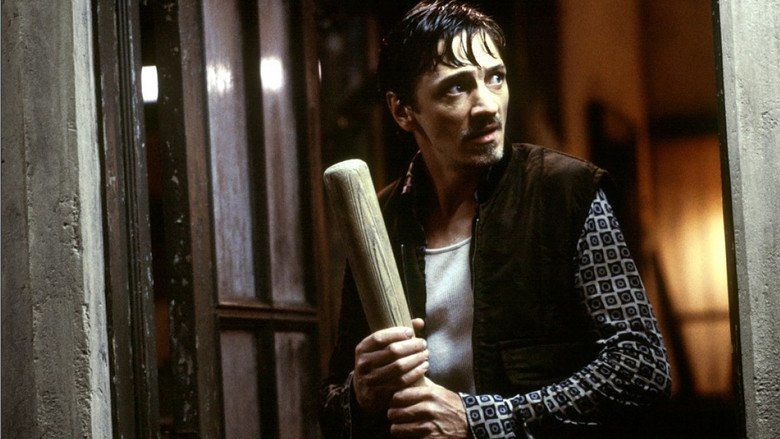
爱德华·达科塔（Edward Dakota) John Cusack 饰
司机是一名退休警察，并且他也是为数不多的正面形象。虽然他不小心撞到了人，
但他有勇气承担责任，能够帮助保护身边的人。他因为内心的谴责而不再当警察，这也说明了他与假警察的区别。这种性格是麦肯·瑞夫对自己的理想，最后被假警察所杀。
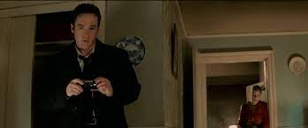
罗德斯·塞缪尔（Samuel Rhodes) Ray Liotta 饰
一个伪装成警察的逃犯，他的个性代表了麦肯·瑞夫潜意识中的罪恶感。
假警察是邪恶的化身，麦肯·瑞夫希望这种邪恶消失。
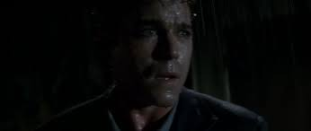
帕瑞丝·内华达（Paris Nevada) Amanda Peet 饰
这是现实中麦肯瑞夫母亲的样子。20多岁的她就开始出卖肉体当小偷，想要在生日前“金盆洗手”，
回到老家种橘子，以前当过坏坏人但现在想过平静美好的生活。最后被小男孩所杀。
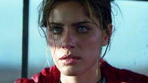
爱丽丝·约克（Alice York) Leila Kenzle 饰
这是麦肯·瑞夫理想中母亲的样子，妈妈对待别人温柔可亲，与他原有的从事不当职业的妈妈有很大的区别，可惜理想中的母亲一出场就遭受车祸，
这样侧面体现了本体童年关爱的缺失。
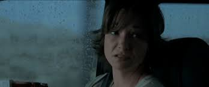
乔治·约克（George York) John C. McGinley 饰
这是理想中麦肯·瑞夫父亲的样子，与母亲二人非常相爱。这个形象与他真正的爸爸完全相反，
这个父亲是一个有责任感懂得如何保护家人，遇事沉着冷静。
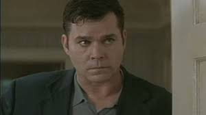
提姆西·约克（Timothy York) Bret Loehr 饰
这是麦肯·瑞夫儿时的形象。男孩在童年受伤后精神分裂形成了多重人格，
他童年的所见所闻变成了不同人格的性格，这都是本体自我的体现。这一切的一切都归咎于他的父母没有像平常人一样他一个温暖的家。
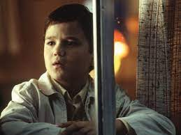
金妮（Ginny) Clea DuVall 饰
新婚情侣中的妻子，是麦肯·瑞夫原生母亲年轻时候的样子。为了达到目的不择手段，
为了结婚骗男人说她已经怀孕，最终，她和小男孩时离开时被汽车爆炸所杀。
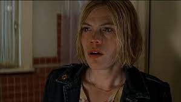
路易斯安那（路）（Lou Isiana） William Lee Scott 饰
新婚情侣中的丈夫，是麦肯·瑞夫原生父亲年轻时候的样子。
男生懒惰、好色、到处鬼混因为冲动结合在一起的两人本来就是个错误。最终第二个被杀。
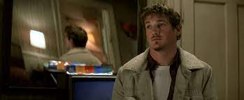
卡罗琳·苏珊（Caroline Suzanne） Rebecca De Mornay 饰
女明星虽然身处上流社会，但今昔不如往日名气早已褪去。她一直抱怨着这一切，
而且对受伤的男孩的妈妈没有一丝关心，所以最后第一个死去。麦肯·瑞夫被这种代表的社会上流人伤害过，表达了麦肯·瑞夫对社会上层阶级的厌恶。
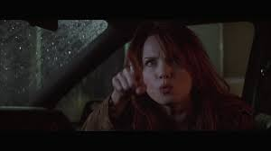
麦肯·瑞夫（Malcolm Rivers） Pruitt Taylor Vince 饰
麦肯·瑞夫在儿时因为父母没有提供一个温暖的家，
而且还为非作歹，导致他看到了很多邪恶的东西，患上了精神分裂症。只要将犯下杀人罪的人格杀死，
就可以让本体免于受刑罚。于是他开始消灭多重人格。
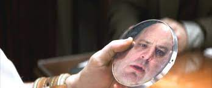
罗伯特·缅因（Robert Maine） Jake Busey 饰
这是现实生活中罪犯的代表。
这种人也加速了麦肯·瑞夫产生精神分裂产生恶的人格。
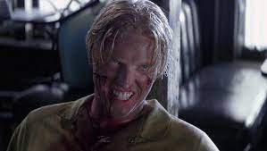